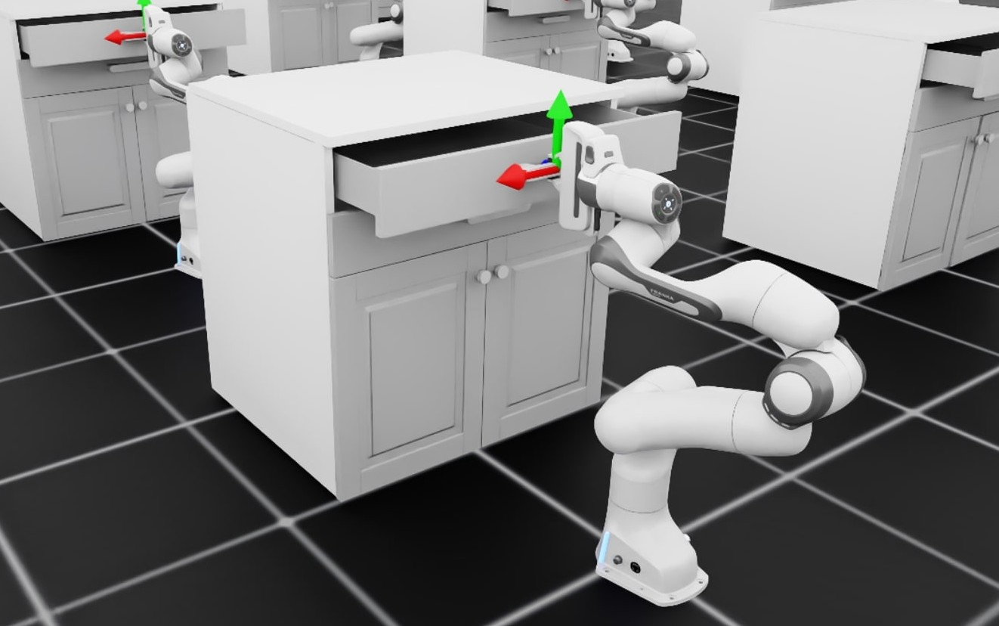

Isaac Lab Cabinet：持续几何奖励，开启即终止

仿真任务场景Isaac-Franka-Cabinet-Direct-v0 / 3c6e67bb5c7ada942a6d1884ab69338f57596f77。官方注册RSL-RL、RL-Games、skrl，这里只展开RSL配置，不能混用三家的数字。源码
动作9维：7臂关节+2指关节，目标由上一位置目标积分，q*=clip(q*+speed_scale*dt*7.5*a)，a限幅±1。23维状态为关节位置/速度、末端至把手向量、抽屉位置/速度，没有RGB、FSM或特权critic；物理120Hz，控制60Hz。源码 源码
r=1.5D+1.5R+10q+2F−0.05Σa²+0.25Σ_{u∈{.01,.2,.35}}1[q>u]
D=(1+d²)^−2*(2 if d≤.02 else1)；R=.5[sign(c1)c1²+sign(c2)c2²]为两轴对齐；F=min(z_l−z_handle,0)+min(z_handle−z_r,0)。Direct环境直接返回该和，没有Manager那层dt乘数。开度奖励和三个阈值奖励每步重复，不是一次性里程碑。源码 源码
完成判据是抽屉物理关节q>0.39m即终止；约500步/8.333s超时。不要求松手、回家或速度停稳。reset仅选中的env关节扰动±.125rad、抽屉归零。不能把这例“开启成功”当作我们“按下→撤回→返回停稳”已解决的证据。源码
RSL默认4096×16×1500=98,304,000样本；8 epochs/8 minibatches，lr5e−4 adaptive、KL.008、gamma.99、GAE.95、clip.2、entropy0，Actor/Critic256/128/64 ELU且均归一化，seed42。入口 ./isaaclab.sh -p scripts/reinforcement_learning/rsl_rl/train.py --task Isaac-Franka-Cabinet-Direct-v0 --headless。尚无本轮复现成功率/硬件耗时。源码 源码 源码
可复用：把手两轴对齐和手指位于正确侧面的几何量；不宜复制持续开启奖励到需要反向撤回的阶段。后者是任务差异推断，并非声明上游reward hacking。